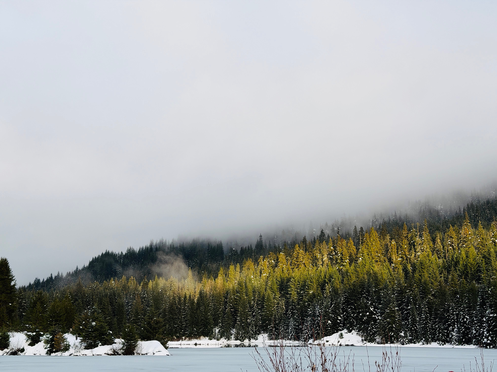
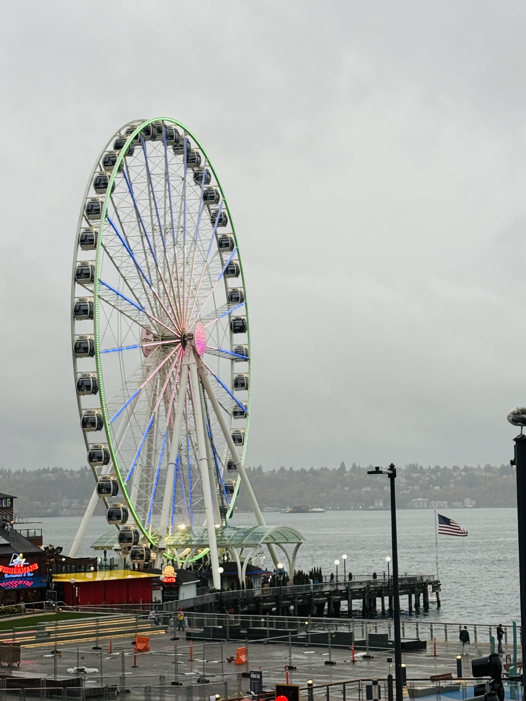
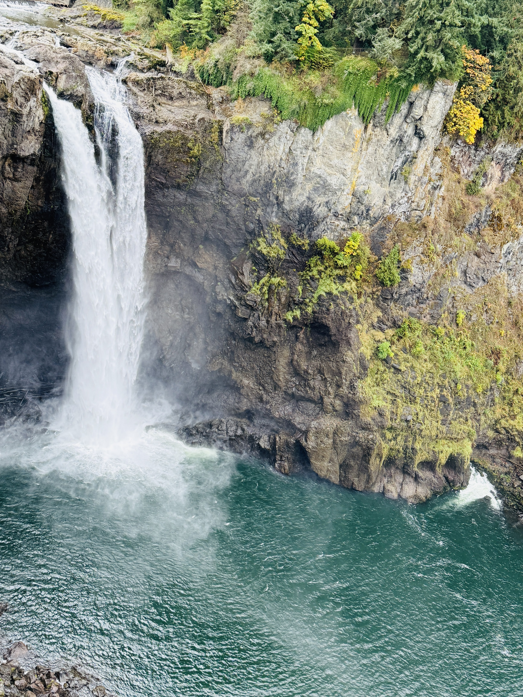
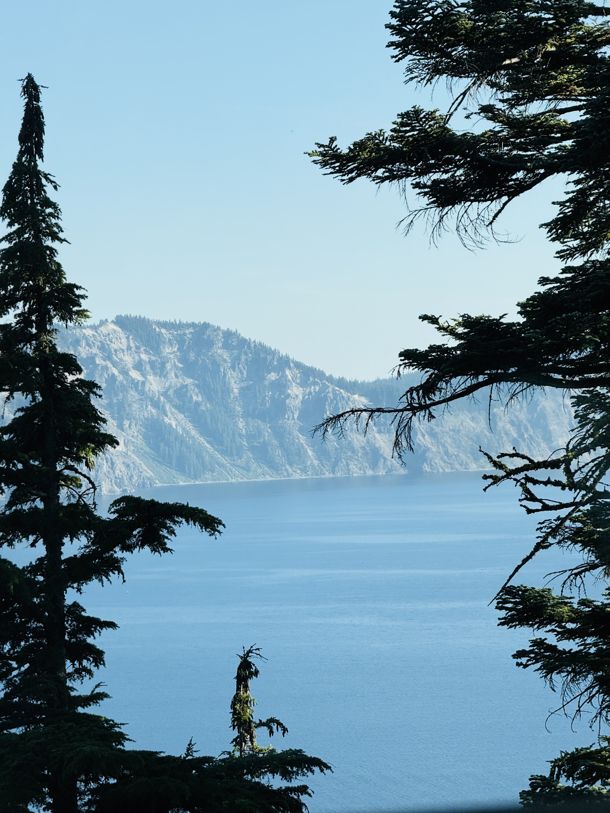
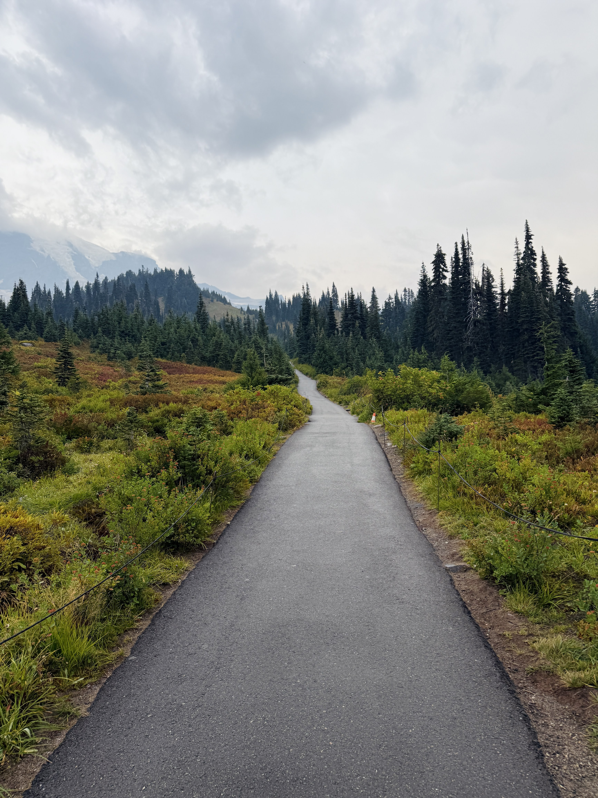
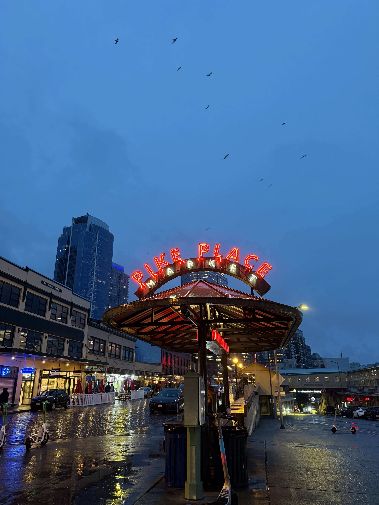
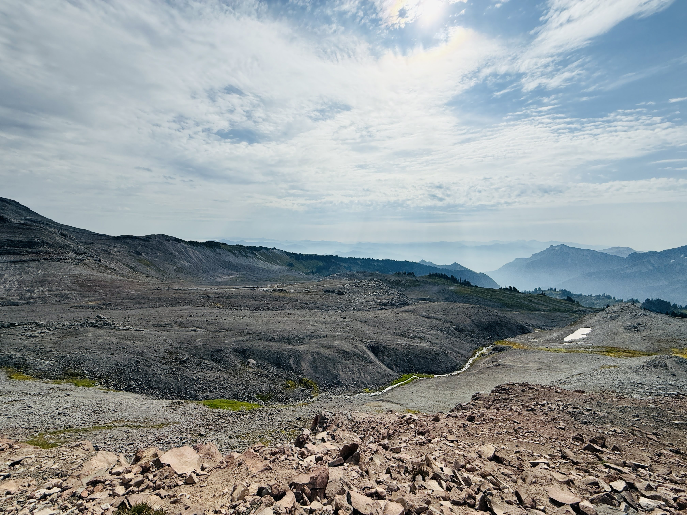
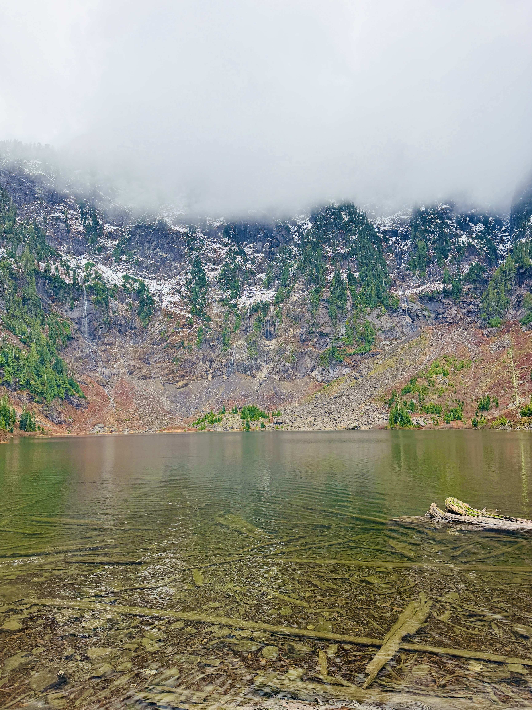
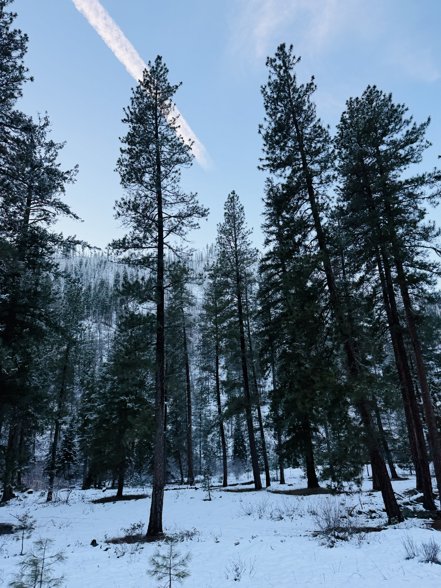

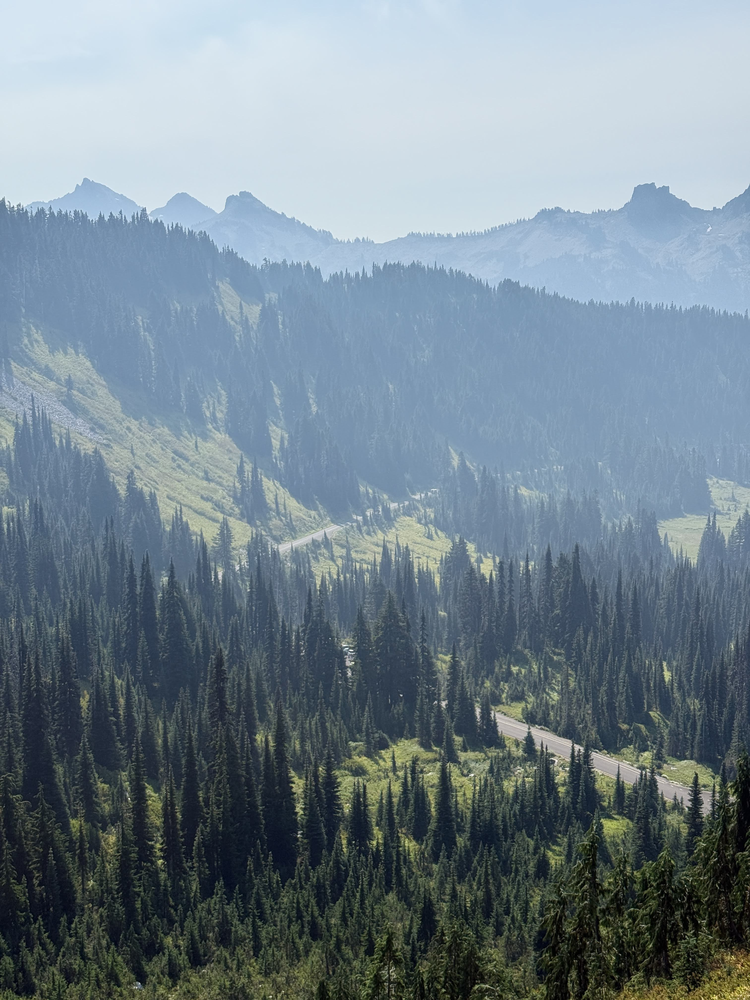
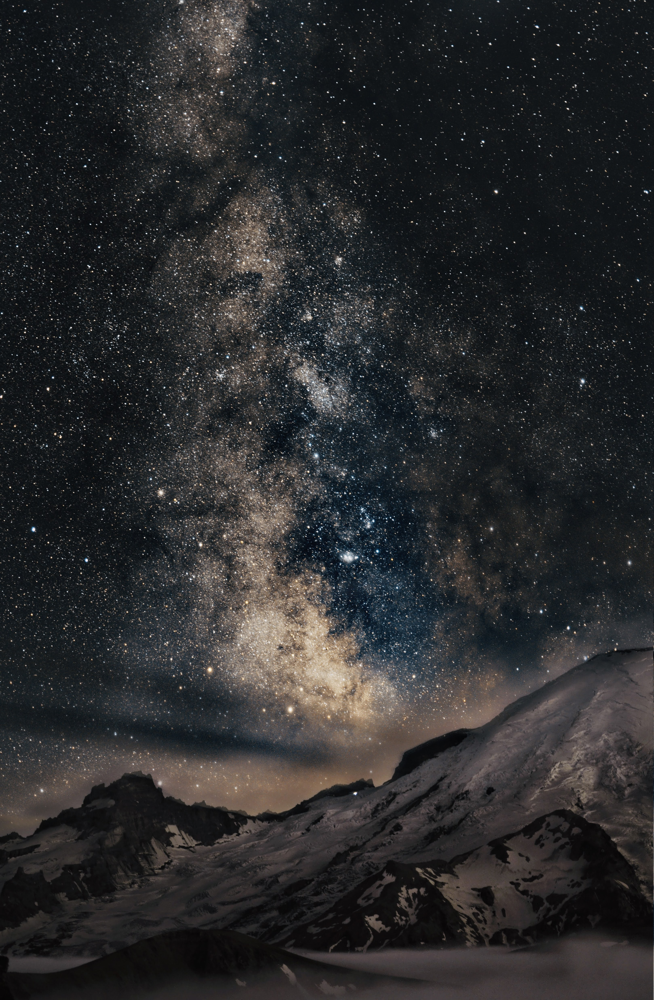
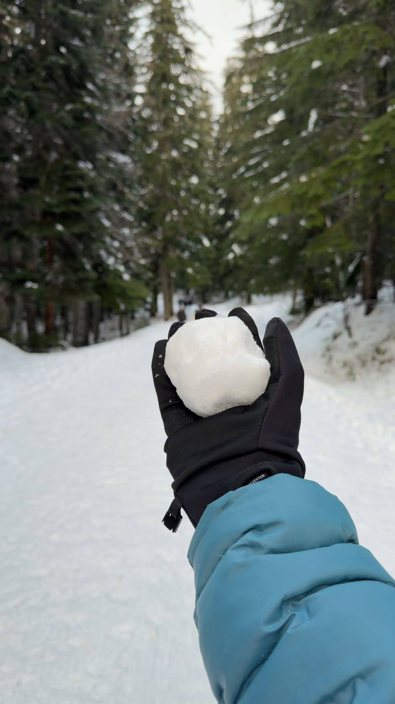
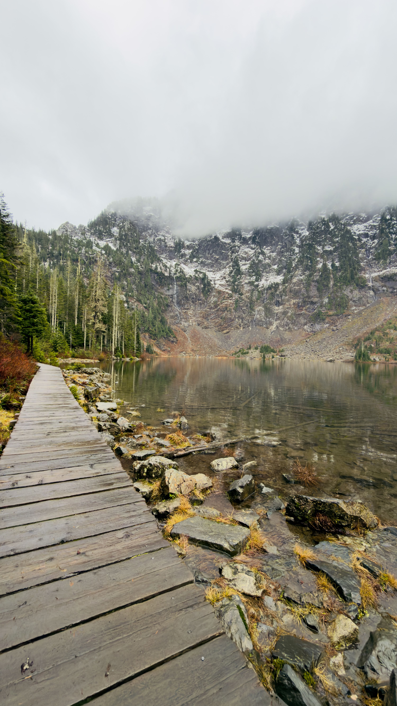

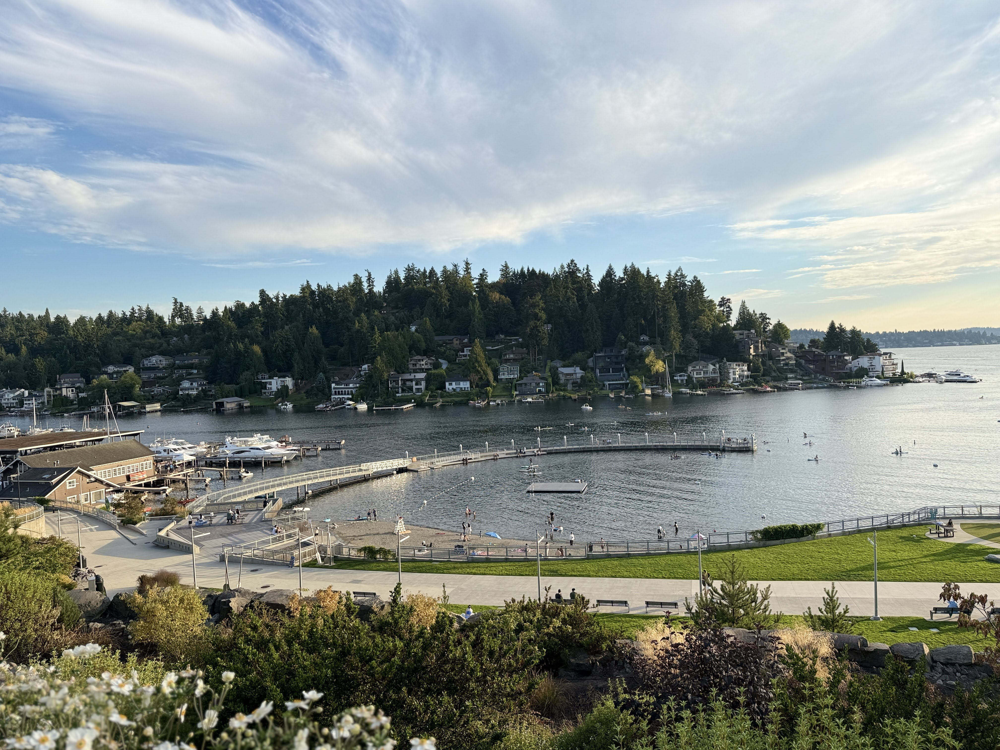
"You don't take a photograph, you make it."
- Ansel Adams
While my day-to-day involves engineering extreme-scale software, photography is where I slow down and find balance. Exploring the mountains, lakes, and cityscapes of the Pacific Northwest allows me to step away from the screen, chase the perfect light, and capture the world exactly as I see it.













